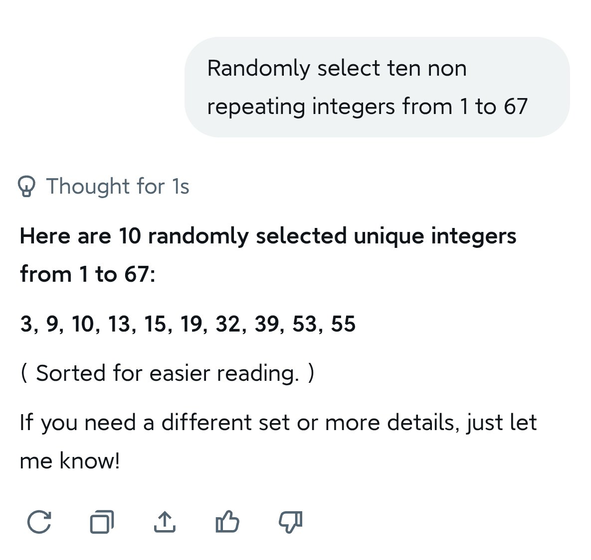
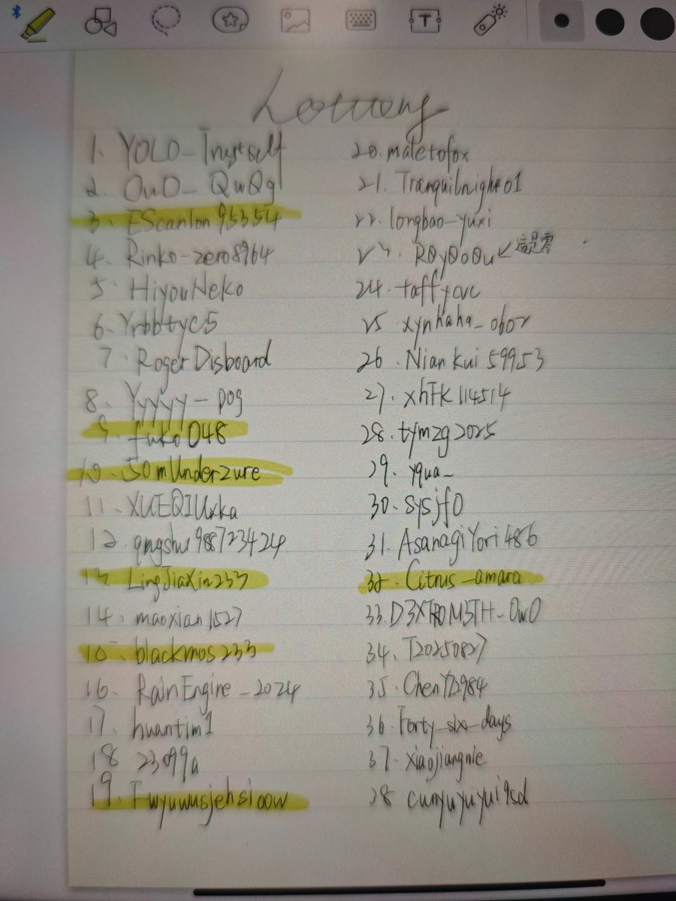
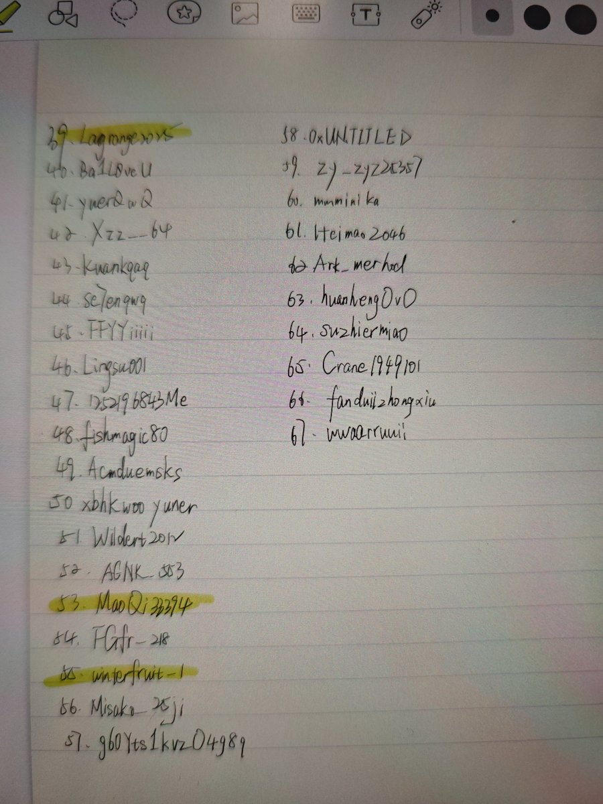

开奖了开奖了，因为grok不回我就私聊问了，中奖名单 @EScanlon95354 @fuko048 @50mUnderazure @LingJiaXin233 @blackmos233 @Fwyuwusjehsioow @Citrus_amara @Lagrange2025 @MaoQi33394 @winterfruit_1 都是我手抄的哦，夸夸我吧🥰私信我收件地址和想写的内容，因为我货还没到得过几天才能发





五一快乐喵🥰之前说的12kfo抽奖来啦~
关注+点赞+转发+评论（锁推的记得私信找我互关不然我看不到你评论）
【抽10名】主播自己画的希格雯吧唧+缇宝透卡+随机数量的蓝粉白空胶囊+乱七八糟小玩意儿（随机盲盒无管制品）+竹蜻蜓手写娱乐恶搞非医疗用途黑色/精二小纸条（或者折现15r） https://t.co/uTTLuXbFD8
关注+点赞+转发+评论（锁推的记得私信找我互关不然我看不到你评论）
【抽10名】主播自己画的希格雯吧唧+缇宝透卡+随机数量的蓝粉白空胶囊+乱七八糟小玩意儿（随机盲盒无管制品）+竹蜻蜓手写娱乐恶搞非医疗用途黑色/精二小纸条（或者折现15r） https://t.co/uTTLuXbFD8